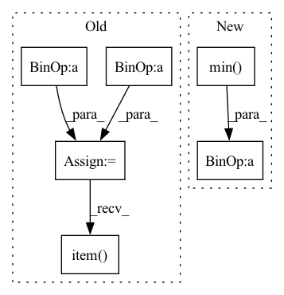

Pattern ID :29429

Before Change
// target = target.clone()
print(target.shape, prediction.shape)
mask = target > 0
target[mask] = (target[mask] - target[mask].min()) / (target[mask].max() - target[mask].min()) * 9 + 1
//target[mask] = 10. / target[mask]
target[~mask] = 0.
mask2 = prediction > 0
// print(mask2.type(torch.float32).mean())
//prediction[mask2] = (prediction[mask2] - prediction[mask2].min()) / (prediction[mask2].max() - prediction[mask2].min()) * 9 + 1
//prediction[mask2] = 10. / prediction[mask2]
prediction[~mask2] = 0.
if printable:
print("******************************************************")
print(target.shape, target.mean().item(), target.max().item(), target.min().item())
print(prediction.shape, prediction.mean().item(), prediction.max().item(), prediction.min().item())
print("******************************************************")
After Change
//mask2 = prediction > 0
// print(mask2.type(torch.float32).mean())
prediction = (prediction - prediction.min()) / (prediction.max() - prediction.min() + 1e-8)
//prediction[mask2] = 10. / prediction[mask2]
//prediction[~mask2] = 0.
In pattern: SUPERPATTERN
Frequency: 3
Non-data size: 6
Instances
Fragment ID: 87142161
Project Name: antocad/focusondepth
Commit Name: 6c33c5957c996f4015e46dd90048624e1b019574
Time: 2021-12-30
Author: antoine.cadiou@icloud.com
File Name: FOD/Loss.py
M Class Name: ScaleAndShiftInvariantLoss
N Class Name: ScaleAndShiftInvariantLoss
M Method Name: forward(3)
N Method Name: forward(4)
M Parent Class: nn.Module
N Parent Class: nn.Module
M File Name: FOD/Loss.py
N File Name: FOD/Loss.py
M Start Line: 125
M End Line: 148
N Start Line: 136
N End Line: 136
'>
Before Change
else:
im_shape = torch.tensor(image.shape[-2:])
ratio = torch.min(new_shape[0] / im_shape[0], new_shape[1] / im_shape[1])
ratio_h = torch.round(im_shape[0] * ratio).to(dtype=torch.int32)
ratio_w = torch.round(im_shape[1] * ratio).to(dtype=torch.int32)
if torchvision._is_tracing():
new_unpad = _tracing_item_onnx(ratio_h), _tracing_item_onnx(ratio_w)
else:
new_unpad = int(ratio_h.item()), int(ratio_w.item())
image = F.interpolate(image[None], size=new_unpad, mode="bilinear", align_corners=False)[0]
After Change
scale_factor: Optional[float] = None
min_size = torch.min(im_shape).to(dtype=torch.float32)
max_size = torch.max(im_shape).to(dtype=torch.float32)
scale = torch.min(self_min_size / min_size, self_max_size / max_size)
if torchvision._is_tracing():
scale_factor = _tracing_float_onnx(scale)
'>
Fragment ID: 87142096
Project Name: zhiqwang/yolov5-rt-stack
Commit Name: 1fea1a60c2517c2130d038af9d25a89f5a278873
Time: 2022-02-07
Author: zhiqwang@foxmail.com
File Name: yolort/models/transform.py
M Class Name: AnonimousClass
N Class Name: AnonimousClass
M Method Name: _resize_image_and_masks(4)
N Method Name: _resize_image_and_masks(3)
M Parent Class:
N Parent Class:
M File Name: yolort/models/transform.py
N File Name: yolort/models/transform.py
M Start Line: 59
M End Line: 75
N Start Line: 67
N End Line: 86
'>
Before Change
else:
min_size = torch.min(im_shape).to(dtype=torch.float32)
max_size = torch.max(im_shape).to(dtype=torch.float32)
scale = torch.min(self_min_size / min_size, self_max_size / max_size)
if torchvision._is_tracing():
scale_factor = _fake_cast_onnx(scale)
else:
scale_factor = scale.item()
recompute_scale_factor = True
image = F.interpolate(
image[None],
After Change
else:
im_shape = torch.tensor(image.shape[-2:])
ratio = torch.min(new_shape[0] / im_shape[0], new_shape[1] / im_shape[1])
ratio_h = torch.round(im_shape[0] * ratio).to(dtype=torch.int32)
ratio_w = torch.round(im_shape[1] * ratio).to(dtype=torch.int32)
if torchvision._is_tracing():
'>
Fragment ID: 87142230
Project Name: zhiqwang/yolov5-rt-stack
Commit Name: cd1a6ec7cda09de0dc92962a37ecb4f723a8dfeb
Time: 2022-02-03
Author: 92794867+q3394101@users.noreply.github.com
File Name: yolort/models/transform.py
M Class Name: AnonimousClass
N Class Name: AnonimousClass
M Method Name: _resize_image_and_masks(3)
N Method Name: _resize_image_and_masks(5)
M Parent Class:
N Parent Class:
M File Name: yolort/models/transform.py
N File Name: yolort/models/transform.py
M Start Line: 257
M End Line: 286
N Start Line: 67
N End Line: 77